Web Server Statistics for at11.ikt.khk.ee
Web Server Statistics for at11.ikt.khk.ee
Program started on Wed, Mar 07 2018 at 2:16 PM.
Analyzed requests from Tue, Mar 06 2018 at 2:32 PM to Wed, Mar 07 2018 at 2:12 PM (0.99 days).
Web Server Statistics for at11.ikt.khk.eeProgram started on Wed, Mar 07 2018 at 2:16 PM.
Analyzed requests from Tue, Mar 06 2018 at 2:32 PM to Wed, Mar 07 2018 at 2:12 PM (0.99 days).
(Go To: Top | General Summary | Monthly Report | Daily Summary | Hourly Summary | Domain Report | Organization Report | Redirected Referrer Report | Failed Referrer Report | Referring Site Report | Browser Report | Browser Summary | Operating System Report | Status Code Report | File Size Report | File Type Report | Directory Report | Request Report)
Successful requests: 7,639
Average successful requests per day: 7,745
Successful requests for pages: 662
Average successful requests for pages per day: 670
Failed requests: 329
Redirected requests: 209
Distinct files requested: 957
Distinct hosts served: 22
Corrupt logfile lines: 1
Data transferred: 189.17 megabytes
Average data transferred per day: 191.83 megabytes
(Go To: Top | General Summary | Monthly Report | Daily Summary | Hourly Summary | Domain Report | Organization Report | Redirected Referrer Report | Failed Referrer Report | Referring Site Report | Browser Report | Browser Summary | Operating System Report | Status Code Report | File Size Report | File Type Report | Directory Report | Request Report)
Each unit ( ) represents 20 requests for pages or part thereof.
) represents 20 requests for pages or part thereof.
| month | #reqs | #pages | |
|---|---|---|---|
| Mar 2018 | 7639 | 662 |   |
Busiest month: Mar 2018 (662 requests for pages).
(Go To: Top | General Summary | Monthly Report | Daily Summary | Hourly Summary | Domain Report | Organization Report | Redirected Referrer Report | Failed Referrer Report | Referring Site Report | Browser Report | Browser Summary | Operating System Report | Status Code Report | File Size Report | File Type Report | Directory Report | Request Report)
Each unit () represents 15 requests for pages or part thereof.
| day | #reqs | #pages | |
|---|---|---|---|
| Sun | 0 | 0 | |
| Mon | 0 | 0 | |
| Tue | 33 | 0 | |
| Wed | 7606 | 662 |   |
| Thu | 0 | 0 | |
| Fri | 0 | 0 | |
| Sat | 0 | 0 |
(Go To: Top | General Summary | Monthly Report | Daily Summary | Hourly Summary | Domain Report | Organization Report | Redirected Referrer Report | Failed Referrer Report | Referring Site Report | Browser Report | Browser Summary | Operating System Report | Status Code Report | File Size Report | File Type Report | Directory Report | Request Report)
Each unit () represents 6 requests for pages or part thereof.
| hour | #reqs | #pages | |
|---|---|---|---|
| 0 | 0 | 0 | |
| 1 | 0 | 0 | |
| 2 | 0 | 0 | |
| 3 | 0 | 0 | |
| 4 | 0 | 0 | |
| 5 | 0 | 0 | |
| 6 | 0 | 0 | |
| 7 | 0 | 0 | |
| 8 | 0 | 0 | |
| 9 | 560 | 29 | |
| 10 | 1934 | 111 |  |
| 11 | 980 | 96 | |
| 12 | 939 | 76 | |
| 13 | 2772 | 256 | |
| 14 | 454 | 94 | |
| 15 | 0 | 0 | |
| 16 | 0 | 0 | |
| 17 | 0 | 0 | |
| 18 | 0 | 0 | |
| 19 | 0 | 0 | |
| 20 | 0 | 0 | |
| 21 | 0 | 0 | |
| 22 | 0 | 0 | |
| 23 | 0 | 0 |
(Go To: Top | General Summary | Monthly Report | Daily Summary | Hourly Summary | Domain Report | Organization Report | Redirected Referrer Report | Failed Referrer Report | Referring Site Report | Browser Report | Browser Summary | Operating System Report | Status Code Report | File Size Report | File Type Report | Directory Report | Request Report)
Listing domains, sorted by the amount of traffic.
| #reqs | %bytes | domain |
|---|---|---|
| 7639 | 100% | [unresolved numerical addresses] |
(Go To: Top | General Summary | Monthly Report | Daily Summary | Hourly Summary | Domain Report | Organization Report | Redirected Referrer Report | Failed Referrer Report | Referring Site Report | Browser Report | Browser Summary | Operating System Report | Status Code Report | File Size Report | File Type Report | Directory Report | Request Report)
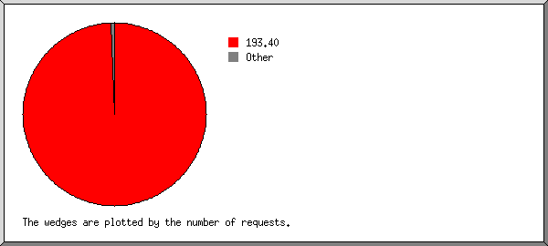
Listing organizations, sorted by the number of requests.
| #reqs | %bytes | organization |
|---|---|---|
| 7599 | 99.69% | 193.40 |
| 22 | 0.16% | 144.76 |
| 3 | 91 | |
| 2 | 0.02% | 112 |
| 1 | 0.01% | 182.108 |
| 1 | 0.01% | 111 |
| 1 | 0.01% | 175.8 |
| 1 | 0.01% | 113 |
| 1 | 0.01% | 114 |
| 1 | 0.01% | 27 |
| 1 | 0.01% | 117 |
| 1 | 0.01% | 118 |
| 1 | 0.01% | 222.42 |
| 1 | 0.01% | 119 |
| 1 | 0.01% | 59 |
| 1 | 0.01% | 175.12 |
| 1 | 0.01% | 86 |
(Go To: Top | General Summary | Monthly Report | Daily Summary | Hourly Summary | Domain Report | Organization Report | Redirected Referrer Report | Failed Referrer Report | Referring Site Report | Browser Report | Browser Summary | Operating System Report | Status Code Report | File Size Report | File Type Report | Directory Report | Request Report)
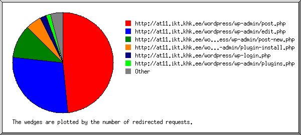
Listing referring URLs, sorted by the number of redirected requests.
(Go To: Top | General Summary | Monthly Report | Daily Summary | Hourly Summary | Domain Report | Organization Report | Redirected Referrer Report | Failed Referrer Report | Referring Site Report | Browser Report | Browser Summary | Operating System Report | Status Code Report | File Size Report | File Type Report | Directory Report | Request Report)
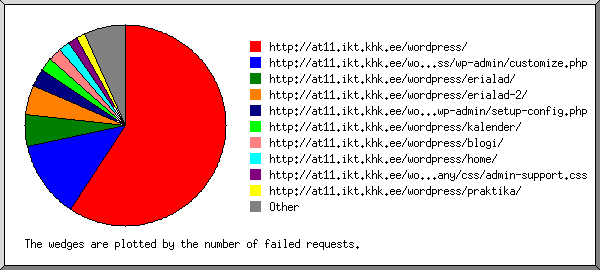
Listing referring URLs, sorted by the number of failed requests.
(Go To: Top | General Summary | Monthly Report | Daily Summary | Hourly Summary | Domain Report | Organization Report | Redirected Referrer Report | Failed Referrer Report | Referring Site Report | Browser Report | Browser Summary | Operating System Report | Status Code Report | File Size Report | File Type Report | Directory Report | Request Report)
Listing referring sites, sorted by the number of requests.
| #reqs | site |
|---|---|
| 7520 | http://at11.ikt.khk.ee/ |
(Go To: Top | General Summary | Monthly Report | Daily Summary | Hourly Summary | Domain Report | Organization Report | Redirected Referrer Report | Failed Referrer Report | Referring Site Report | Browser Report | Browser Summary | Operating System Report | Status Code Report | File Size Report | File Type Report | Directory Report | Request Report)
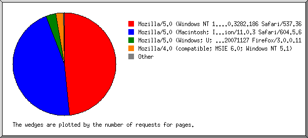
Listing browsers with at least 1 request for a page, sorted by the number of requests for pages.
| #reqs | #pages | browser |
|---|---|---|
| 4428 | 320 | Mozilla/5.0 (Windows NT 10.0; Win64; x64) AppleWebKit/537.36 (KHTML, like Gecko) Chrome/64.0.3282.186 Safari/537.36 |
| 3132 | 304 | Mozilla/5.0 (Macintosh; Intel Mac OS X 10_13_3) AppleWebKit/604.5.6 (KHTML, like Gecko) Version/11.0.3 Safari/604.5.6 |
| 22 | 21 | Mozilla/5.0 (Windows; U; Windows NT 6.0; en-GB; rv:1.0; trendictionbot0.5.0; trendiction search; http://www.trendiction.de/bot; please let us know of any problems; web at trendiction.com) Gecko/20071127 Firefox/3.0.0.11 |
| 15 | 15 | Mozilla/4.0 (compatible; MSIE 6.0; Windows NT 5.1) |
| 8 | 1 | WordPress/4.9.4; http://at11.ikt.khk.ee/wordpress |
| 1 | 1 | Mozilla/5.0 (Macintosh; Intel Mac OS X 10_13_3) AppleWebKit/604.5.6 (KHTML, like Gecko) |
| 33 | 0 | [not listed: 1 browser] |
(Go To: Top | General Summary | Monthly Report | Daily Summary | Hourly Summary | Domain Report | Organization Report | Redirected Referrer Report | Failed Referrer Report | Referring Site Report | Browser Report | Browser Summary | Operating System Report | Status Code Report | File Size Report | File Type Report | Directory Report | Request Report)
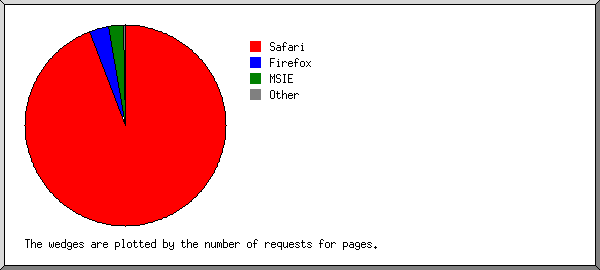
Listing browsers with at least 1 request for a page, sorted by the number of requests for pages.
| # | #reqs | #pages | browser |
|---|---|---|---|
| 1 | 7560 | 624 | Safari |
| 4428 | 320 | Safari/537 | |
| 3132 | 304 | Safari/604 | |
| 2 | 22 | 21 | Firefox |
| 22 | 21 | Firefox/3 | |
| 3 | 15 | 15 | MSIE |
| 15 | 15 | MSIE/6 | |
| 4 | 1 | 1 | Mozilla |
| 5 | 8 | 1 | WordPress |
| 8 | 1 | WordPress/4 | |
| 33 | 0 | [not listed: 1 browser] |
(Go To: Top | General Summary | Monthly Report | Daily Summary | Hourly Summary | Domain Report | Organization Report | Redirected Referrer Report | Failed Referrer Report | Referring Site Report | Browser Report | Browser Summary | Operating System Report | Status Code Report | File Size Report | File Type Report | Directory Report | Request Report)
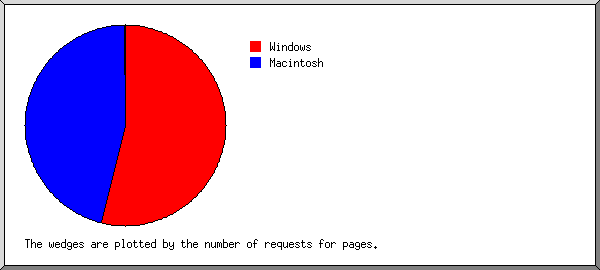
Listing operating systems, sorted by the number of requests for pages.
| # | #reqs | #pages | OS |
|---|---|---|---|
| 1 | 4465 | 356 | Windows |
| 4428 | 320 | Windows NT | |
| 22 | 21 | Unknown Windows | |
| 15 | 15 | Windows XP | |
| 2 | 3133 | 305 | Macintosh |
| 3 | 41 | 1 | OS unknown |
(Go To: Top | General Summary | Monthly Report | Daily Summary | Hourly Summary | Domain Report | Organization Report | Redirected Referrer Report | Failed Referrer Report | Referring Site Report | Browser Report | Browser Summary | Operating System Report | Status Code Report | File Size Report | File Type Report | Directory Report | Request Report)
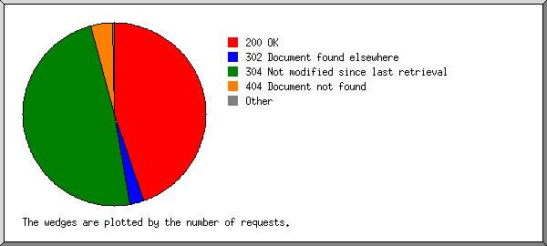
Listing status codes, sorted numerically.
| #reqs | status code |
|---|---|
| 3655 | 200 OK |
| 5 | 301 Document moved permanently |
| 204 | 302 Document found elsewhere |
| 3984 | 304 Not modified since last retrieval |
| 1 | 400 Bad request |
| 4 | 403 Access forbidden |
| 315 | 404 Document not found |
| 9 | 500 Internal server error |
(Go To: Top | General Summary | Monthly Report | Daily Summary | Hourly Summary | Domain Report | Organization Report | Redirected Referrer Report | Failed Referrer Report | Referring Site Report | Browser Report | Browser Summary | Operating System Report | Status Code Report | File Size Report | File Type Report | Directory Report | Request Report)
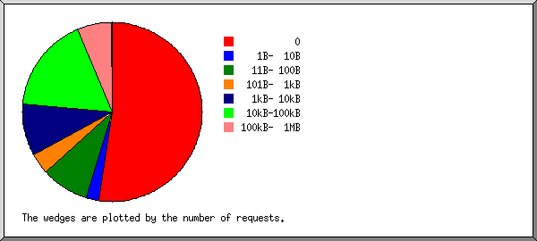
| size | #reqs | %bytes |
|---|---|---|
| 0 | 3998 | |
| 1B- 10B | 172 | |
| 11B- 100B | 660 | 0.02% |
| 101B- 1kB | 288 | 0.07% |
| 1kB- 10kB | 714 | 1.53% |
| 10kB-100kB | 1330 | 30.28% |
| 100kB- 1MB | 475 | 66.21% |
| 1MB- 10MB | 2 | 1.90% |
(Go To: Top | General Summary | Monthly Report | Daily Summary | Hourly Summary | Domain Report | Organization Report | Redirected Referrer Report | Failed Referrer Report | Referring Site Report | Browser Report | Browser Summary | Operating System Report | Status Code Report | File Size Report | File Type Report | Directory Report | Request Report)
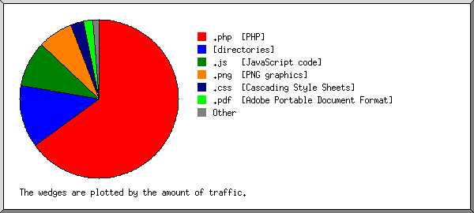
Listing extensions with at least 0.1% of the traffic, sorted by the amount of traffic.
| #reqs | %bytes | extension |
|---|---|---|
| 1975 | 64.89% | .php [PHP] |
| 662 | 12.82% | [directories] |
| 2645 | 9.39% | .js [JavaScript code] |
| 260 | 7.18% | .png [PNG graphics] |
| 1729 | 2.63% | .css [Cascading Style Sheets] |
| 2 | 1.90% | .pdf [Adobe Portable Document Format] |
| 59 | 0.70% | .jpg [JPEG graphics] |
| 60 | 0.29% | .woff2 |
| 247 | 0.20% | [not listed: 5 extensions] |
(Go To: Top | General Summary | Monthly Report | Daily Summary | Hourly Summary | Domain Report | Organization Report | Redirected Referrer Report | Failed Referrer Report | Referring Site Report | Browser Report | Browser Summary | Operating System Report | Status Code Report | File Size Report | File Type Report | Directory Report | Request Report)
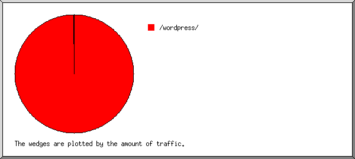
Listing directories with at least 0.01% of the traffic, sorted by the amount of traffic.
| #reqs | %bytes | directory |
|---|---|---|
| 7594 | 99.99% | /wordpress/ |
| 45 | 0.01% | [not listed: 2 directories] |
(Go To: Top | General Summary | Monthly Report | Daily Summary | Hourly Summary | Domain Report | Organization Report | Redirected Referrer Report | Failed Referrer Report | Referring Site Report | Browser Report | Browser Summary | Operating System Report | Status Code Report | File Size Report | File Type Report | Directory Report | Request Report)
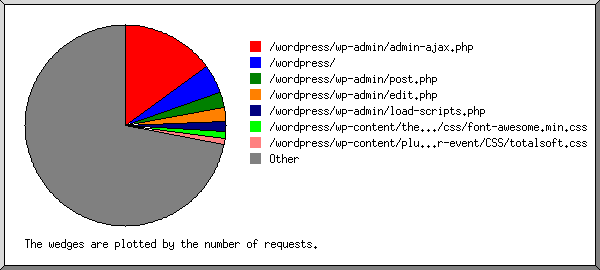
Listing files with at least 20 requests, sorted by the number of requests.
| #reqs | %bytes | last time | file |
|---|---|---|---|
| 1151 | 3.33% | Mar/ 7/18 2:12 PM | /wordpress/wp-admin/admin-ajax.php |
| 73 | 1.68% | Mar/ 7/18 2:00 PM | /wordpress/wp-admin/admin-ajax.php?_panelsnonce=50720cfd5d |
| 47 | 0.06% | Mar/ 7/18 1:59 PM | /wordpress/wp-admin/admin-ajax.php?_panelsnonce=b4dc51d015 |
| 42 | 0.09% | Mar/ 7/18 2:09 PM | /wordpress/wp-admin/admin-ajax.php?_panelsnonce=652652a504 |
| 24 | Mar/ 7/18 2:09 PM | /wordpress/wp-admin/admin-ajax.php?action=oembed-cache&post=31&pll_ajax_backend=1&pll_post_id=31 | |
| 13 | 0.02% | Mar/ 7/18 11:22 AM | /wordpress/wp-admin/admin-ajax.php?_panelsnonce=49f8c0c319 |
| 354 | 6.55% | Mar/ 7/18 2:10 PM | /wordpress/ |
| 20 | 0.18% | Mar/ 7/18 2:09 PM | /wordpress/?siteorigin_panels_live_editor=true |
| 16 | 0.02% | Mar/ 7/18 11:36 AM | /wordpress/?customize_changeset_uuid=606f08d1-a514-4d03-8c4b-b2ae5cb2fe72&customize_autosaved=on&customize_preview_nonce=e1af134f63 |
| 14 | 0.02% | Mar/ 7/18 10:37 AM | /wordpress/?customize_changeset_uuid=796d159f-1e83-4f54-abb8-92f3657d2a01&customize_autosaved=on&customize_preview_nonce=e1af134f63 |
| 12 | 0.21% | Mar/ 7/18 1:52 PM | /wordpress/?preview_id=31&preview_nonce=a56e4d47b3&_thumbnail_id=-1&preview=true |
| 188 | 20.27% | Mar/ 7/18 2:10 PM | /wordpress/wp-admin/post.php |
| 37 | 3.74% | Mar/ 7/18 2:03 PM | /wordpress/wp-admin/post.php?post=31&action=edit |
| 24 | 2.65% | Mar/ 7/18 2:09 PM | /wordpress/wp-admin/post.php?post=31&action=edit&message=1 |
| 15 | 2.03% | Mar/ 7/18 1:58 PM | /wordpress/wp-admin/post.php?post=191&action=edit |
| 177 | 6.19% | Mar/ 7/18 2:10 PM | /wordpress/wp-admin/edit.php |
| 126 | 4.51% | Mar/ 7/18 2:03 PM | /wordpress/wp-admin/edit.php?post_type=page |
| 118 | 4.54% | Mar/ 7/18 2:11 PM | /wordpress/wp-admin/load-scripts.php |
| 84 | 0.22% | Mar/ 7/18 1:44 PM | /wordpress/wp-content/themes/fetch/css/font-awesome.min.css |
| 44 | 0.14% | Mar/ 7/18 1:44 PM | /wordpress/wp-content/themes/fetch/css/font-awesome.min.css?ver=4.3.0 |
| 40 | 0.07% | Mar/ 7/18 1:44 PM | /wordpress/wp-content/themes/fetch/css/font-awesome.min.css?ver=20150224 |
| 79 | 0.06% | Mar/ 7/18 2:11 PM | /wordpress/wp-content/plugins/calendar-event/CSS/totalsoft.css |
| 65 | 0.04% | Mar/ 7/18 2:11 PM | /wordpress/wp-content/plugins/calendar-event/CSS/totalsoft.css?ver=4.9.4 |
| 72 | 1.62% | Mar/ 7/18 2:04 PM | /wordpress/kalender/ |
| 49 | 1.15% | Mar/ 7/18 1:59 PM | /wordpress/kalender/?preview_id=191&preview_nonce=d2a2eb9057&_thumbnail_id=-1&preview=true |
| 61 | 1.19% | Mar/ 7/18 2:12 PM | /wordpress/erialad/ |
| 58 | 17.28% | Mar/ 7/18 2:12 PM | /wordpress/wp-admin/customize.php |
| 23 | 6.97% | Mar/ 7/18 2:01 PM | /wordpress/wp-admin/customize.php?url=http://at11.ikt.khk.ee/wordpress/ |
| 54 | 0.03% | Mar/ 7/18 2:02 PM | /wordpress/wp-content/plugins/polylang/css/admin.min.css |
| 54 | 0.03% | Mar/ 7/18 2:02 PM | /wordpress/wp-content/plugins/polylang/css/admin.min.css?ver=2.3.2 |
| 54 | 2.14% | Mar/ 7/18 2:06 PM | /wordpress/wp-admin/load-styles.php |
| 52 | 0.28% | Mar/ 7/18 2:10 PM | /wordpress/wp-includes/css/dashicons.min.css |
| 32 | 0.12% | Mar/ 7/18 2:01 PM | /wordpress/wp-includes/css/dashicons.min.css?ver=4.9.4 |
| 19 | 0.14% | Mar/ 7/18 2:10 PM | /wordpress/wp-includes/css/dashicons.min.css?ver=4.9.4&wp-mce-4607-20180123-tadv-4.6.7 |
| 51 | 0.10% | Mar/ 7/18 2:12 PM | /wordpress/wp-includes/js/wp-emoji-release.min.js |
| 51 | 0.10% | Mar/ 7/18 2:12 PM | /wordpress/wp-includes/js/wp-emoji-release.min.js?ver=4.9.4 |
| 45 | 0.02% | Mar/ 7/18 2:09 PM | /wordpress/wp-content/plugins/calendar-event/JS/Total-Soft-Calendar-Widget.js |
| 45 | 0.02% | Mar/ 7/18 2:09 PM | /wordpress/wp-content/plugins/calendar-event/JS/Total-Soft-Calendar-Widget.js?ver=4.9.4 |
| 45 | 0.01% | Mar/ 7/18 2:09 PM | /wordpress/wp-content/plugins/calendar-event/CSS/Total-Soft-Calendar-Widget.css |
| 45 | 0.01% | Mar/ 7/18 2:09 PM | /wordpress/wp-content/plugins/calendar-event/CSS/Total-Soft-Calendar-Widget.css?ver=4.9.4 |
| 44 | 0.08% | Mar/ 7/18 2:02 PM | /wordpress/wp-content/plugins/so-widgets-bundle/base/css/admin.css |
| 44 | 0.08% | Mar/ 7/18 2:02 PM | /wordpress/wp-content/plugins/so-widgets-bundle/base/css/admin.css?ver=1.11.4 |
| 44 | 0.03% | Mar/ 7/18 2:02 PM | /wordpress/wp-content/plugins/so-widgets-bundle/base/inc/fields/css/media-field.css |
| 44 | 0.03% | Mar/ 7/18 2:02 PM | /wordpress/wp-content/plugins/so-widgets-bundle/base/inc/fields/css/media-field.css?ver=1.11.4 |
| 44 | Mar/ 7/18 1:44 PM | /wordpress/wp-content/themes/fetch/js/admin-custom.js | |
| 44 | Mar/ 7/18 1:44 PM | /wordpress/wp-content/themes/fetch/js/admin-custom.js?ver=1.0.0 | |
| 44 | Mar/ 7/18 2:02 PM | /wordpress/wp-content/plugins/so-widgets-bundle/base/inc/fields/css/measurement-field.css | |
| 44 | Mar/ 7/18 2:02 PM | /wordpress/wp-content/plugins/so-widgets-bundle/base/inc/fields/css/measurement-field.css?ver=1.11.4 | |
| 44 | 0.03% | Mar/ 7/18 1:44 PM | /wordpress/wp-content/themes/fetch/admin/css/admin.css |
| 44 | 0.03% | Mar/ 7/18 1:44 PM | /wordpress/wp-content/themes/fetch/admin/css/admin.css?ver=1.0.0 |
| 43 | 0.21% | Mar/ 7/18 2:02 PM | /wordpress/wp-content/plugins/siteorigin-panels/css/admin.min.css |
| 43 | 0.21% | Mar/ 7/18 2:02 PM | /wordpress/wp-content/plugins/siteorigin-panels/css/admin.min.css?ver=2.6.3 |
| 43 | Mar/ 7/18 2:02 PM | /wordpress/wp-content/plugins/so-widgets-bundle/base/inc/fields/css/date-range-field.css | |
| 43 | Mar/ 7/18 2:02 PM | /wordpress/wp-content/plugins/so-widgets-bundle/base/inc/fields/css/date-range-field.css?ver=1.11.4 | |
| 43 | 0.01% | Mar/ 7/18 2:02 PM | /wordpress/wp-content/plugins/so-widgets-bundle/base/inc/fields/js/icon-field.min.js |
| 43 | 0.01% | Mar/ 7/18 2:02 PM | /wordpress/wp-content/plugins/so-widgets-bundle/base/inc/fields/js/icon-field.min.js?ver=1.11.4 |
| 43 | 0.01% | Mar/ 7/18 2:02 PM | /wordpress/wp-content/plugins/so-widgets-bundle/base/inc/fields/css/icon-field.css |
| 43 | 0.01% | Mar/ 7/18 2:02 PM | /wordpress/wp-content/plugins/so-widgets-bundle/base/inc/fields/css/icon-field.css?ver=1.11.4 |
| 43 | Mar/ 7/18 2:02 PM | /wordpress/wp-content/plugins/so-widgets-bundle/base/inc/fields/css/tinymce-field.css | |
| 43 | Mar/ 7/18 2:02 PM | /wordpress/wp-content/plugins/so-widgets-bundle/base/inc/fields/css/tinymce-field.css?ver=1.11.4 | |
| 43 | 0.01% | Mar/ 7/18 2:02 PM | /wordpress/wp-content/plugins/so-widgets-bundle/base/inc/fields/js/lib/pikaday/pikaday.css |
| 43 | 0.01% | Mar/ 7/18 2:02 PM | /wordpress/wp-content/plugins/so-widgets-bundle/base/inc/fields/js/lib/pikaday/pikaday.css?ver=4.9.4 |
| 42 | 0.05% | Mar/ 7/18 2:02 PM | /wordpress/wp-content/plugins/so-widgets-bundle/base/inc/fields/js/lib/pikaday/pikaday.min.js |
| 42 | 0.05% | Mar/ 7/18 2:02 PM | /wordpress/wp-content/plugins/so-widgets-bundle/base/inc/fields/js/lib/pikaday/pikaday.min.js?ver=1.5.1 |
| 42 | Mar/ 7/18 2:09 PM | /wordpress/wp-content/plugins/calendar-event/CSS/alpha-color-picker.css | |
| 42 | Mar/ 7/18 2:09 PM | /wordpress/wp-content/plugins/calendar-event/CSS/alpha-color-picker.css?ver=4.9.4 | |
| 42 | Mar/ 7/18 2:02 PM | /wordpress/wp-content/plugins/so-widgets-bundle/base/inc/fields/js/posts-field.min.js | |
| 42 | Mar/ 7/18 2:02 PM | /wordpress/wp-content/plugins/so-widgets-bundle/base/inc/fields/js/posts-field.min.js?ver=1.11.4 | |
| 42 | 0.01% | Mar/ 7/18 2:02 PM | /wordpress/wp-content/plugins/so-widgets-bundle/base/inc/fields/js/autocomplete-field.min.js |
| 42 | 0.01% | Mar/ 7/18 2:02 PM | /wordpress/wp-content/plugins/so-widgets-bundle/base/inc/fields/js/autocomplete-field.min.js?ver=1.11.4 |
| 42 | Mar/ 7/18 2:02 PM | /wordpress/wp-content/plugins/so-widgets-bundle/base/inc/fields/js/date-range-field.min.js | |
| 42 | Mar/ 7/18 2:02 PM | /wordpress/wp-content/plugins/so-widgets-bundle/base/inc/fields/js/date-range-field.min.js?ver=1.11.4 | |
| 42 | 0.01% | Mar/ 7/18 2:02 PM | /wordpress/wp-content/plugins/so-widgets-bundle/base/inc/fields/js/tinymce-field.min.js |
| 42 | 0.01% | Mar/ 7/18 2:02 PM | /wordpress/wp-content/plugins/so-widgets-bundle/base/inc/fields/js/tinymce-field.min.js?ver=1.11.4 |
| 42 | 0.01% | Mar/ 7/18 2:02 PM | /wordpress/wp-content/plugins/siteorigin-panels/learn/css/learn.css |
| 42 | 0.01% | Mar/ 7/18 2:02 PM | /wordpress/wp-content/plugins/siteorigin-panels/learn/css/learn.css?ver=4.9.4 |
| 42 | 0.01% | Mar/ 7/18 2:09 PM | /wordpress/wp-content/plugins/calendar-event/CSS/Total-Soft-Calendar-Admin.css |
| 42 | 0.01% | Mar/ 7/18 2:09 PM | /wordpress/wp-content/plugins/calendar-event/CSS/Total-Soft-Calendar-Admin.css?ver=4.9.4 |
| 42 | 0.06% | Mar/ 7/18 2:02 PM | /wordpress/wp-content/plugins/so-widgets-bundle/base/js/admin.min.js |
| 42 | 0.06% | Mar/ 7/18 2:02 PM | /wordpress/wp-content/plugins/so-widgets-bundle/base/js/admin.min.js?ver=1.11.4 |
| 42 | 0.02% | Mar/ 7/18 2:02 PM | /wordpress/wp-content/plugins/so-widgets-bundle/base/inc/fields/js/media-field.min.js |
| 42 | 0.02% | Mar/ 7/18 2:02 PM | /wordpress/wp-content/plugins/so-widgets-bundle/base/inc/fields/js/media-field.min.js?ver=1.11.4 |
| 41 | 0.01% | Mar/ 7/18 2:02 PM | /wordpress/wp-content/plugins/siteorigin-panels/learn/js/learn.min.js |
| 41 | 0.01% | Mar/ 7/18 2:02 PM | /wordpress/wp-content/plugins/siteorigin-panels/learn/js/learn.min.js?ver=4.9.4 |
| 41 | 0.31% | Mar/ 7/18 2:02 PM | /wordpress/wp-content/plugins/siteorigin-panels/js/siteorigin-panels-263.min.js |
| 41 | 0.31% | Mar/ 7/18 2:02 PM | /wordpress/wp-content/plugins/siteorigin-panels/js/siteorigin-panels-263.min.js?ver=2.6.3 |
| 40 | 0.29% | Mar/ 7/18 1:44 PM | /wordpress/wp-content/themes/fetch/style.css |
| 40 | 0.29% | Mar/ 7/18 1:44 PM | /wordpress/wp-content/themes/fetch/style.css?ver=4.9.4 |
| 40 | 0.03% | Mar/ 7/18 1:44 PM | /wordpress/wp-content/themes/fetch/css/flexslider.css |
| 40 | 0.03% | Mar/ 7/18 1:44 PM | /wordpress/wp-content/themes/fetch/css/flexslider.css?ver=20150224 |
| 39 | 0.03% | Mar/ 7/18 1:56 PM | /wordpress/wp-admin/images/spinner-2x.gif |
| 39 | Mar/ 7/18 1:44 PM | /wordpress/wp-content/themes/fetch/js/navigation.js | |
| 39 | Mar/ 7/18 1:44 PM | /wordpress/wp-content/themes/fetch/js/navigation.js?ver=20120206 | |
| 39 | Mar/ 7/18 1:44 PM | /wordpress/wp-content/themes/fetch/js/custom.js | |
| 39 | Mar/ 7/18 1:44 PM | /wordpress/wp-content/themes/fetch/js/custom.js?ver=1.0.0 | |
| 39 | 0.01% | Mar/ 7/18 2:09 PM | /wordpress/wp-content/plugins/calendar-event/JS/alpha-color-picker.js |
| 39 | 0.01% | Mar/ 7/18 2:10 PM | /wordpress/wp-content/plugins/contact-form-7/includes/css/styles.css |
| 39 | 0.01% | Mar/ 7/18 2:10 PM | /wordpress/wp-content/plugins/contact-form-7/includes/css/styles.css?ver=5.0.1 |
| 39 | 0.07% | Mar/ 7/18 1:44 PM | /wordpress/wp-content/themes/fetch/js/jquery.flexslider-min.js |
| 39 | 0.07% | Mar/ 7/18 1:44 PM | /wordpress/wp-content/themes/fetch/js/jquery.flexslider-min.js?ver=2.4.0 |
| 39 | Mar/ 7/18 1:44 PM | /wordpress/wp-content/themes/fetch/js/skip-link-focus-fix.js | |
| 39 | Mar/ 7/18 1:44 PM | /wordpress/wp-content/themes/fetch/js/skip-link-focus-fix.js?ver=20130115 | |
| 38 | 0.05% | Mar/ 7/18 2:10 PM | /wordpress/wp-content/plugins/contact-form-7/includes/js/scripts.js |
| 38 | 0.05% | Mar/ 7/18 2:10 PM | /wordpress/wp-content/plugins/contact-form-7/includes/js/scripts.js?ver=5.0.1 |
| 38 | 0.05% | Mar/ 7/18 1:56 PM | /wordpress/wp-includes/js/thickbox/loadingAnimation.gif |
| 38 | 0.03% | Mar/ 7/18 2:01 PM | /wordpress/wp-includes/js/jquery/jquery-migrate.min.js |
| 38 | 0.03% | Mar/ 7/18 2:01 PM | /wordpress/wp-includes/js/jquery/jquery-migrate.min.js?ver=1.4.1 |
| 38 | 0.29% | Mar/ 7/18 2:01 PM | /wordpress/wp-includes/js/jquery/jquery.js |
| 38 | 0.29% | Mar/ 7/18 2:01 PM | /wordpress/wp-includes/js/jquery/jquery.js?ver=1.12.4 |
| 37 | 0.01% | Mar/ 7/18 1:56 PM | /wordpress/wp-includes/js/thickbox/thickbox.css |
| 37 | 0.01% | Mar/ 7/18 1:56 PM | /wordpress/wp-includes/js/thickbox/thickbox.css?ver=4.9.4 |
| 36 | 2.61% | Mar/ 7/18 1:58 PM | /wordpress/wp-admin/admin.php |
| 14 | 0.68% | Mar/ 7/18 1:58 PM | /wordpress/wp-admin/admin.php?page=Total_Soft_Events%3FTS_CalEv_Nonce%3Db5b6f0bb82 |
| 36 | Mar/ 7/18 1:37 PM | /wordpress/wp-content/plugins/booking/assets/img/icon-16x16.png | |
| 36 | Mar/ 7/18 2:09 PM | /wordpress/wp-content/plugins/calendar-event/Images/admin.png | |
| 36 | 0.03% | Mar/ 7/18 2:09 PM | /wordpress/wp-content/plugins/calendar-event/JS/Total-Soft-Calendar-Admin.js |
| 36 | 0.03% | Mar/ 7/18 2:09 PM | /wordpress/wp-content/plugins/calendar-event/JS/Total-Soft-Calendar-Admin.js?ver=4.9.4 |
| 35 | 0.84% | Mar/ 7/18 2:10 PM | /wordpress/wp-admin/themes.php |
| 34 | 0.03% | Mar/ 7/18 1:49 PM | /wordpress/wp-content/plugins/booking/assets/libs/bootstrap/css/bootstrap-theme.css |
| 34 | 0.03% | Mar/ 7/18 1:49 PM | /wordpress/wp-content/plugins/booking/assets/libs/bootstrap/css/bootstrap-theme.css?ver=3.3.5.1 |
| 34 | 0.10% | Mar/ 7/18 1:49 PM | /wordpress/wp-content/plugins/booking/assets/libs/bootstrap/js/bootstrap.js |
| 34 | 0.10% | Mar/ 7/18 1:49 PM | /wordpress/wp-content/plugins/booking/assets/libs/bootstrap/js/bootstrap.js?ver=3.3.5.1 |
| 34 | 0.18% | Mar/ 7/18 1:49 PM | /wordpress/wp-content/plugins/booking/assets/libs/bootstrap/css/bootstrap.css |
| 34 | 0.18% | Mar/ 7/18 1:49 PM | /wordpress/wp-content/plugins/booking/assets/libs/bootstrap/css/bootstrap.css?ver=3.3.5.1 |
| 34 | 0.01% | Mar/ 7/18 2:01 PM | /wordpress/wp-includes/js/wp-embed.min.js |
| 34 | 0.01% | Mar/ 7/18 2:01 PM | /wordpress/wp-includes/js/wp-embed.min.js?ver=4.9.4 |
| 33 | 0.01% | Mar/ 7/18 1:56 PM | /wordpress/wp-admin/js/code-editor.min.js |
| 33 | 0.01% | Mar/ 7/18 1:56 PM | /wordpress/wp-admin/js/code-editor.min.js?ver=4.9.4 |
| 33 | 1.33% | Mar/ 7/18 1:56 PM | /wordpress/wp-includes/js/codemirror/csslint.js |
| 33 | 1.33% | Mar/ 7/18 1:56 PM | /wordpress/wp-includes/js/codemirror/csslint.js?ver=1.0.5 |
| 33 | 0.07% | Mar/ 7/18 1:56 PM | /wordpress/wp-includes/js/codemirror/codemirror.min.css |
| 33 | 0.07% | Mar/ 7/18 1:56 PM | /wordpress/wp-includes/js/codemirror/codemirror.min.css?ver=5.29.1-alpha-ee20357 |
| 32 | Mar/ 7/18 1:56 PM | /wordpress/wp-includes/js/mediaelement/mediaelement-migrate.min.js | |
| 32 | Mar/ 7/18 1:56 PM | /wordpress/wp-includes/js/mediaelement/mediaelement-migrate.min.js?ver=4.9.4 | |
| 32 | 0.03% | Mar/ 7/18 1:56 PM | /wordpress/wp-includes/js/mediaelement/mediaelementplayer-legacy.min.css |
| 32 | 0.03% | Mar/ 7/18 1:56 PM | /wordpress/wp-includes/js/mediaelement/mediaelementplayer-legacy.min.css?ver=4.2.6-78496d1 |
| 32 | Mar/ 7/18 1:56 PM | /wordpress/wp-includes/js/mediaelement/wp-mediaelement.min.js | |
| 32 | Mar/ 7/18 1:56 PM | /wordpress/wp-includes/js/mediaelement/wp-mediaelement.min.js?ver=4.9.4 | |
| 32 | 0.47% | Mar/ 7/18 1:56 PM | /wordpress/wp-includes/js/mediaelement/mediaelement-and-player.min.js |
| 32 | 0.47% | Mar/ 7/18 1:56 PM | /wordpress/wp-includes/js/mediaelement/mediaelement-and-player.min.js?ver=4.2.6-78496d1 |
| 32 | 0.01% | Mar/ 7/18 1:56 PM | /wordpress/wp-includes/js/mediaelement/wp-mediaelement.min.css |
| 32 | 0.01% | Mar/ 7/18 1:56 PM | /wordpress/wp-includes/js/mediaelement/wp-mediaelement.min.css?ver=4.9.4 |
| 32 | 0.01% | Mar/ 7/18 2:02 PM | /wordpress/wp-content/plugins/siteorigin-panels/learn/img/play.svg |
| 31 | 0.04% | Mar/ 7/18 1:56 PM | /wordpress/wp-includes/js/media-audiovideo.min.js |
| 31 | 0.04% | Mar/ 7/18 1:56 PM | /wordpress/wp-includes/js/media-audiovideo.min.js?ver=4.9.4 |
| 31 | 0.01% | Mar/ 7/18 1:56 PM | /wordpress/wp-admin/js/widgets/media-image-widget.min.js |
| 31 | 0.01% | Mar/ 7/18 1:56 PM | /wordpress/wp-admin/js/widgets/media-image-widget.min.js?ver=4.9.4 |
| 31 | 2.36% | Mar/ 7/18 1:56 PM | /wordpress/wp-includes/js/codemirror/codemirror.min.js |
| 31 | 2.36% | Mar/ 7/18 1:56 PM | /wordpress/wp-includes/js/codemirror/codemirror.min.js?ver=5.29.1-alpha-ee20357 |
| 31 | 0.17% | Mar/ 7/18 1:44 PM | /wordpress/wp-content/themes/fetch/fonts/fontawesome-webfont.woff2 |
| 31 | 0.17% | Mar/ 7/18 1:44 PM | /wordpress/wp-content/themes/fetch/fonts/fontawesome-webfont.woff2?v=4.3.0 |
| 31 | Mar/ 7/18 1:56 PM | /wordpress/wp-admin/js/widgets/media-audio-widget.min.js | |
| 31 | Mar/ 7/18 1:56 PM | /wordpress/wp-admin/js/widgets/media-audio-widget.min.js?ver=4.9.4 | |
| 31 | Mar/ 7/18 1:56 PM | /wordpress/wp-includes/js/api-request.min.js | |
| 31 | Mar/ 7/18 1:56 PM | /wordpress/wp-includes/js/api-request.min.js?ver=4.9.4 | |
| 31 | 0.01% | Mar/ 7/18 1:56 PM | /wordpress/wp-admin/js/widgets/media-video-widget.min.js |
| 31 | 0.01% | Mar/ 7/18 1:56 PM | /wordpress/wp-admin/js/widgets/media-video-widget.min.js?ver=4.9.4 |
| 31 | 0.86% | Mar/ 7/18 1:56 PM | /wordpress/wp-includes/js/codemirror/jshint.js |
| 31 | 0.86% | Mar/ 7/18 1:56 PM | /wordpress/wp-includes/js/codemirror/jshint.js?ver=2.9.5.999 |
| 31 | 0.02% | Mar/ 7/18 1:56 PM | /wordpress/wp-admin/js/widgets/custom-html-widgets.min.js |
| 31 | 0.02% | Mar/ 7/18 1:56 PM | /wordpress/wp-admin/js/widgets/custom-html-widgets.min.js?ver=4.9.4 |
| 31 | 0.30% | Mar/ 7/18 1:56 PM | /wordpress/wp-includes/js/media-views.min.js |
| 31 | 0.30% | Mar/ 7/18 1:56 PM | /wordpress/wp-includes/js/media-views.min.js?ver=4.9.4 |
| 31 | 0.02% | Mar/ 7/18 1:56 PM | /wordpress/wp-admin/js/widgets/text-widgets.min.js |
| 31 | 0.02% | Mar/ 7/18 1:56 PM | /wordpress/wp-admin/js/widgets/text-widgets.min.js?ver=4.9.4 |
| 31 | 0.04% | Mar/ 7/18 1:56 PM | /wordpress/wp-admin/js/editor.min.js |
| 31 | 0.04% | Mar/ 7/18 1:56 PM | /wordpress/wp-admin/js/editor.min.js?ver=4.9.4 |
| 31 | 0.04% | Mar/ 7/18 1:56 PM | /wordpress/wp-includes/js/media-editor.min.js |
| 31 | 0.04% | Mar/ 7/18 1:56 PM | /wordpress/wp-includes/js/media-editor.min.js?ver=4.9.4 |
| 31 | 0.05% | Mar/ 7/18 1:56 PM | /wordpress/wp-admin/js/widgets/media-widgets.min.js |
| 31 | 0.05% | Mar/ 7/18 1:56 PM | /wordpress/wp-admin/js/widgets/media-widgets.min.js?ver=4.9.4 |
| 31 | 0.06% | Mar/ 7/18 1:56 PM | /wordpress/wp-includes/js/codemirror/htmlhint.js |
| 31 | 0.06% | Mar/ 7/18 1:56 PM | /wordpress/wp-includes/js/codemirror/htmlhint.js?ver=0.9.14-xwp |
| 31 | 0.01% | Mar/ 7/18 1:56 PM | /wordpress/wp-admin/js/widgets/media-gallery-widget.min.js |
| 31 | 0.01% | Mar/ 7/18 1:56 PM | /wordpress/wp-admin/js/widgets/media-gallery-widget.min.js?ver=4.9.4 |
| 30 | Mar/ 7/18 1:56 PM | /wordpress/wp-includes/js/imgareaselect/imgareaselect.css | |
| 30 | Mar/ 7/18 1:56 PM | /wordpress/wp-includes/js/imgareaselect/imgareaselect.css?ver=0.9.8 | |
| 29 | 0.05% | Mar/ 7/18 2:01 PM | /wordpress/wp-includes/css/admin-bar.min.css |
| 29 | 0.05% | Mar/ 7/18 2:01 PM | /wordpress/wp-includes/css/admin-bar.min.css?ver=4.9.4 |
| 29 | 0.02% | Mar/ 7/18 2:01 PM | /wordpress/wp-includes/js/admin-bar.min.js |
| 29 | 0.02% | Mar/ 7/18 2:01 PM | /wordpress/wp-includes/js/admin-bar.min.js?ver=4.9.4 |
| 28 | 0.85% | Mar/ 7/18 2:10 PM | /wordpress/wp-admin/ |
| 26 | 2.83% | Mar/ 7/18 1:39 PM | /wordpress/wp-admin/post-new.php |
| 22 | 2.19% | Mar/ 7/18 1:39 PM | /wordpress/wp-admin/post-new.php?post_type=page |
| 26 | 0.51% | Mar/ 7/18 2:12 PM | /wordpress/uudised/ |
| 24 | 0.02% | Mar/ 7/18 1:49 PM | /wordpress/wp-content/plugins/booking/css/calendar.css |
| 24 | 0.02% | Mar/ 7/18 1:49 PM | /wordpress/wp-content/plugins/booking/css/calendar.css?ver=8.1.2 |
| 24 | 0.15% | Mar/ 7/18 1:49 PM | /wordpress/wp-content/plugins/booking/js/datepick/jquery.datepick.js |
| 24 | 0.15% | Mar/ 7/18 1:49 PM | /wordpress/wp-content/plugins/booking/js/datepick/jquery.datepick.js?ver=1.1 |
| 24 | 0.01% | Mar/ 7/18 1:49 PM | /wordpress/wp-content/plugins/booking/js/wpbc_vars.js |
| 24 | 0.01% | Mar/ 7/18 1:49 PM | /wordpress/wp-content/plugins/booking/js/wpbc_vars.js?ver=8.1.2 |
| 24 | 0.05% | Mar/ 7/18 2:01 PM | /wordpress/wp-includes/js/tinymce/langs/wp-langs-en.js |
| 24 | 0.05% | Mar/ 7/18 2:01 PM | /wordpress/wp-includes/js/tinymce/langs/wp-langs-en.js?ver=4607-20180123-tadv-4.6.7 |
| 24 | 0.01% | Mar/ 7/18 1:49 PM | /wordpress/wp-content/plugins/booking/css/skins/traditional.css |
| 24 | 0.01% | Mar/ 7/18 1:49 PM | /wordpress/wp-content/plugins/booking/css/skins/traditional.css?ver=8.1.2 |
| 23 | Mar/ 7/18 2:01 PM | /wordpress/wp-includes/js/wp-a11y.min.js | |
| 23 | Mar/ 7/18 2:01 PM | /wordpress/wp-includes/js/wp-a11y.min.js?ver=4.9.4 | |
| 22 | Mar/ 7/18 2:02 PM | /wordpress/wp-content/plugins/siteorigin-panels/css/icons/panels-icons.woff | |
| 22 | 0.01% | Mar/ 7/18 2:10 PM | /wordpress/wp-content/plugins/tinymce-advanced/mce/wptadv/plugin.min.js |
| 22 | 0.01% | Mar/ 7/18 2:10 PM | /wordpress/wp-content/plugins/tinymce-advanced/mce/wptadv/plugin.min.js?wp-mce-4607-20180123-tadv-4.6.7 |
| 22 | 0.15% | Mar/ 7/18 2:10 PM | /wordpress/wp-content/plugins/tinymce-advanced/mce/table/plugin.min.js |
| 22 | 0.15% | Mar/ 7/18 2:10 PM | /wordpress/wp-content/plugins/tinymce-advanced/mce/table/plugin.min.js?wp-mce-4607-20180123-tadv-4.6.7 |
| 22 | 0.03% | Mar/ 7/18 2:10 PM | /wordpress/wp-content/plugins/tinymce-advanced/mce/searchreplace/plugin.min.js |
| 22 | 0.03% | Mar/ 7/18 2:10 PM | /wordpress/wp-content/plugins/tinymce-advanced/mce/searchreplace/plugin.min.js?wp-mce-4607-20180123-tadv-4.6.7 |
| 22 | 0.01% | Mar/ 7/18 2:10 PM | /wordpress/wp-content/plugins/tinymce-advanced/mce/anchor/plugin.min.js |
| 22 | 0.01% | Mar/ 7/18 2:10 PM | /wordpress/wp-content/plugins/tinymce-advanced/mce/anchor/plugin.min.js?wp-mce-4607-20180123-tadv-4.6.7 |
| 22 | 0.03% | Mar/ 7/18 2:10 PM | /wordpress/wp-content/plugins/tinymce-advanced/mce/visualchars/plugin.min.js |
| 22 | 0.03% | Mar/ 7/18 2:10 PM | /wordpress/wp-content/plugins/tinymce-advanced/mce/visualchars/plugin.min.js?wp-mce-4607-20180123-tadv-4.6.7 |
| 22 | 0.01% | Mar/ 7/18 2:10 PM | /wordpress/wp-content/plugins/tinymce-advanced/mce/code/plugin.min.js |
| 22 | 0.01% | Mar/ 7/18 2:10 PM | /wordpress/wp-content/plugins/tinymce-advanced/mce/code/plugin.min.js?wp-mce-4607-20180123-tadv-4.6.7 |
| 22 | Mar/ 7/18 2:10 PM | /wordpress/wp-content/plugins/tinymce-advanced/mce/print/plugin.min.js | |
| 22 | Mar/ 7/18 2:10 PM | /wordpress/wp-content/plugins/tinymce-advanced/mce/print/plugin.min.js?wp-mce-4607-20180123-tadv-4.6.7 | |
| 22 | 0.01% | Mar/ 7/18 2:10 PM | /wordpress/wp-content/plugins/tinymce-advanced/mce/visualblocks/plugin.min.js |
| 22 | 0.01% | Mar/ 7/18 2:10 PM | /wordpress/wp-content/plugins/tinymce-advanced/mce/visualblocks/plugin.min.js?wp-mce-4607-20180123-tadv-4.6.7 |
| 22 | 0.01% | Mar/ 7/18 2:10 PM | /wordpress/wp-content/plugins/tinymce-advanced/mce/advlist/plugin.min.js |
| 22 | 0.01% | Mar/ 7/18 2:10 PM | /wordpress/wp-content/plugins/tinymce-advanced/mce/advlist/plugin.min.js?wp-mce-4607-20180123-tadv-4.6.7 |
| 22 | Mar/ 7/18 2:06 PM | /wordpress/wp-includes/js/wp-util.min.js | |
| 22 | Mar/ 7/18 2:06 PM | /wordpress/wp-includes/js/wp-util.min.js?ver=4.9.4 | |
| 22 | 0.01% | Mar/ 7/18 2:10 PM | /wordpress/wp-content/plugins/tinymce-advanced/mce/insertdatetime/plugin.min.js |
| 22 | 0.01% | Mar/ 7/18 2:10 PM | /wordpress/wp-content/plugins/tinymce-advanced/mce/insertdatetime/plugin.min.js?wp-mce-4607-20180123-tadv-4.6.7 |
| 22 | 0.16% | Mar/ 7/18 2:10 PM | /wordpress/wp-includes/js/tinymce/skins/lightgray/skin.min.css |
| 20 | 0.12% | Mar/ 7/18 2:10 PM | /wordpress/wp-includes/js/tinymce/skins/lightgray/skin.min.css?wp-mce-4607-20180123-tadv-4.6.7 |
| 22 | 0.01% | Mar/ 7/18 2:10 PM | /wordpress/wp-content/plugins/tinymce-advanced/mce/nonbreaking/plugin.min.js |
| 22 | 0.01% | Mar/ 7/18 2:10 PM | /wordpress/wp-content/plugins/tinymce-advanced/mce/nonbreaking/plugin.min.js?wp-mce-4607-20180123-tadv-4.6.7 |
| 21 | 0.02% | Mar/ 7/18 1:37 PM | /wordpress/wp-content/plugins/booking/core/any/css/admin-support.css |
| 21 | 0.02% | Mar/ 7/18 1:37 PM | /wordpress/wp-content/plugins/booking/core/any/css/admin-support.css?ver=8.1.2 |
| 21 | 0.59% | Mar/ 7/18 2:11 PM | /wordpress/wp-admin/plugins.php |
| 21 | 0.01% | Mar/ 7/18 1:37 PM | /wordpress/wp-content/plugins/booking/css/admin.css |
| 21 | 0.01% | Mar/ 7/18 1:37 PM | /wordpress/wp-content/plugins/booking/css/admin.css?ver=8.1.2 |
| 21 | 0.01% | Mar/ 7/18 1:37 PM | /wordpress/wp-content/plugins/booking/core/any/css/admin-menu.css |
| 21 | 0.01% | Mar/ 7/18 1:37 PM | /wordpress/wp-content/plugins/booking/core/any/css/admin-menu.css?ver=8.1.2 |
| 21 | 0.01% | Mar/ 7/18 1:37 PM | /wordpress/wp-content/plugins/booking/css/modal.css |
| 21 | 0.01% | Mar/ 7/18 1:37 PM | /wordpress/wp-content/plugins/booking/css/modal.css?ver=8.1.2 |
| 21 | 0.06% | Mar/ 7/18 2:10 PM | /wordpress/wp-includes/js/tinymce/skins/lightgray/fonts/tinymce.woff |
| 21 | Mar/ 7/18 1:44 PM | /wordpress/wp-content/themes/fetch/js/customizer.js | |
| 21 | Mar/ 7/18 1:44 PM | /wordpress/wp-content/themes/fetch/js/customizer.js?ver=20130508 | |
| 20 | Mar/ 7/18 2:01 PM | /wordpress/wp-admin/images/resize-2x.gif | |
| 20 | Mar/ 7/18 2:06 PM | /wordpress/wp-admin/images/arrows-2x.png | |
| 20 | 0.05% | Mar/ 7/18 1:49 PM | /wordpress/wp-content/plugins/booking/css/timeline.css |
| 20 | 0.05% | Mar/ 7/18 1:49 PM | /wordpress/wp-content/plugins/booking/css/timeline.css?ver=8.1.2 |
| 20 | 0.01% | Mar/ 7/18 1:44 PM | /wordpress/wp-content/themes/fetch/css/fontawesome-iconpicker.min.css |
| 20 | 0.01% | Mar/ 7/18 1:44 PM | /wordpress/wp-content/themes/fetch/css/fontawesome-iconpicker.min.css?ver=4.9.4 |
| 20 | 0.04% | Mar/ 7/18 2:06 PM | /wordpress/wp-includes/js/backbone.min.js |
| 20 | 0.04% | Mar/ 7/18 2:06 PM | /wordpress/wp-includes/js/backbone.min.js?ver=1.2.3 |
| 20 | 0.03% | Mar/ 7/18 2:10 PM | /wordpress/wp-includes/js/tinymce/skins/wordpress/wp-content.css |
| 19 | 0.03% | Mar/ 7/18 2:10 PM | /wordpress/wp-includes/js/tinymce/skins/wordpress/wp-content.css?ver=4.9.4&wp-mce-4607-20180123-tadv-4.6.7 |
| 20 | 0.01% | Mar/ 7/18 2:10 PM | /wordpress/wp-includes/js/tinymce/skins/lightgray/content.min.css |
| 19 | 0.01% | Mar/ 7/18 2:10 PM | /wordpress/wp-includes/js/tinymce/skins/lightgray/content.min.css?wp-mce-4607-20180123-tadv-4.6.7 |
| 20 | 0.03% | Mar/ 7/18 1:44 PM | /wordpress/wp-content/themes/fetch/js/fontawesome-iconpicker.min.js |
| 20 | 0.03% | Mar/ 7/18 1:44 PM | /wordpress/wp-content/themes/fetch/js/fontawesome-iconpicker.min.js?ver=4.9.4 |
| 20 | 0.01% | Mar/ 7/18 2:06 PM | /wordpress/wp-includes/js/customize-base.min.js |
| 20 | 0.01% | Mar/ 7/18 2:06 PM | /wordpress/wp-includes/js/customize-base.min.js?ver=4.9.4 |
| 20 | 0.01% | Mar/ 7/18 2:06 PM | /wordpress/wp-includes/js/customize-preview-widgets.min.js |
| 20 | 0.01% | Mar/ 7/18 2:06 PM | /wordpress/wp-includes/js/customize-preview-widgets.min.js?ver=4.9.4 |
| 20 | 0.02% | Mar/ 7/18 2:06 PM | /wordpress/wp-includes/js/underscore.min.js |
| 20 | 0.02% | Mar/ 7/18 2:06 PM | /wordpress/wp-includes/js/underscore.min.js?ver=1.8.3 |
| 20 | 0.02% | Mar/ 7/18 2:06 PM | /wordpress/wp-includes/js/customize-selective-refresh.min.js |
| 20 | 0.02% | Mar/ 7/18 2:06 PM | /wordpress/wp-includes/js/customize-selective-refresh.min.js?ver=4.9.4 |
| 1366 | 18.85% | Mar/ 7/18 2:12 PM | [not listed: 266 files] |